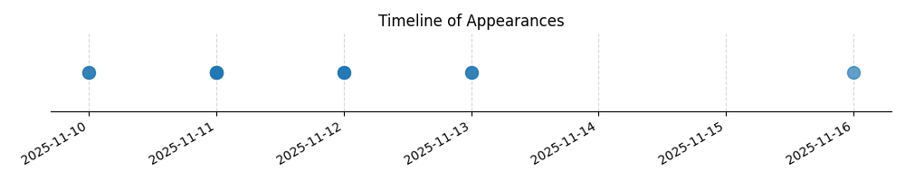

Kategorie: Provozní postupy
Otázka se týká postupu při ručním spouštění motoru, což je specifický provozní postup. Odpověď B je správná, protože v leteckých provozních postupech je kladen důraz na jasnou a jednoznačnou komunikaci, zejména při kritických činnostech jako je startování motoru. Pilot smí manipulovat se zapalováním pouze na explicitní a srozumitelný pokyn spouštějícího, aby se předešlo nedorozuměním a potenciálně nebezpečným situacím. Možnost A je zjevně nesmyslná a možnost C není dostatečně jednoznačná pro kritickou operaci.

| Datum výskytu |
|---|
| 2025-11-16 |
| 2025-11-13 |
| 2025-11-12 |
| 2025-11-11 |
| 2025-11-10 |